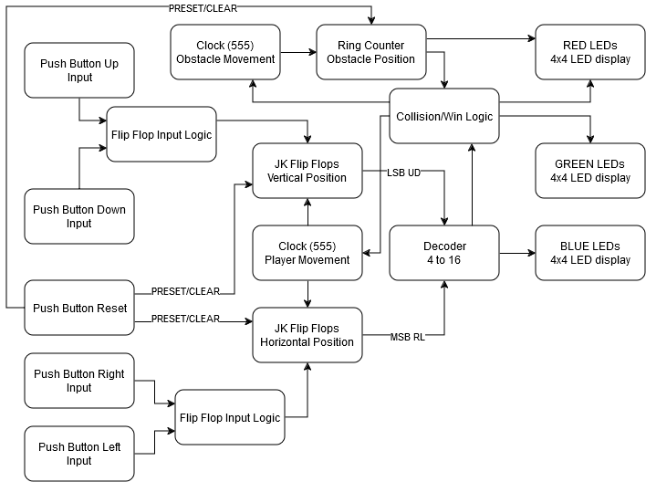
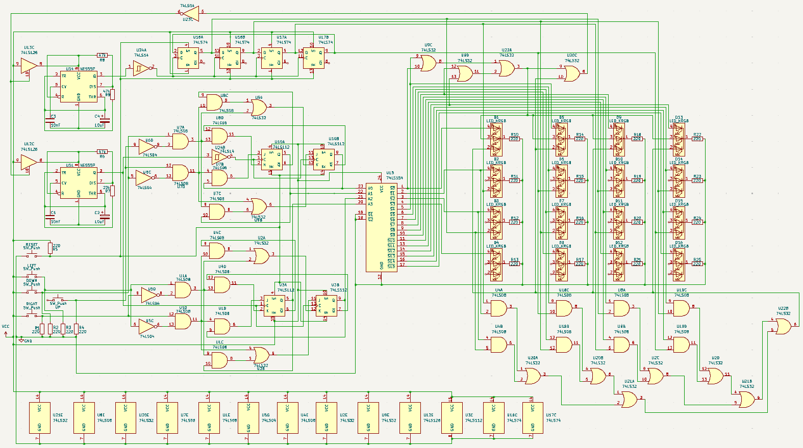

02 / Digital systems integration / Built & demonstrated
Team project · Maxwell Lutter & Carlos Selvi
The Other Side: discrete-logic LED game
With Carlos Selvi, developed a C++ gameplay prototype, simulated the digital logic, and built a playable breadboard game. Two position state machines, obstacle counters, and 555 clocks drive a 4 × 4 RGB LED display with collision detection, win indication, and reset.
- Team & contribution
- Co-authored with Carlos Selvi; digital-logic game design and implementation
- Tools
- Finite state machines · 555 timers · Logisim · C++ prototyping
- Outcome
- Physical game with bounded movement, win/loss freeze, and reset

The system
The player moves a blue LED across a 4 × 4 display while red obstacle LEDs move through the middle rows. Reaching the top row produces a win; sharing a position with an obstacle produces a loss. Either condition freezes the game until an asynchronous reset restores its initial state.
Two two-bit finite state machines track horizontal and vertical position independently. A decoder maps those four bits to the player’s LED. Ring-counter outputs drive the obstacles, and combinational logic compares the decoded positions.
{kind=link}

Decisions that mattered
We replaced a shift-register approach with bounded state machines so the player could not leave the screen. Independent horizontal and vertical state updates also made diagonal movement possible.
Sampling directional buttons on the rising edge of a 555 clock limited the player’s speed. The tradeoff was a less intuitive input response: a short press could fall between clock edges and be missed. Separate player and obstacle timers allowed different movement rates.
The display and decoder exposed an interface mismatch: the decoder’s active-low outputs had to be inverted to drive the RGB LED board. Collision and win logic then controlled the timers’ supply path through a tri-state buffer, freezing the displayed state.
From prototype to implementation
A rudimentary C++ demo in Visual Studio helped establish the gameplay and useful clock speeds. Logisim provided a complete logic simulation, with simplified clocks and display behavior. CircuitVerse and Tinkercad supported individual circuit experiments.
The final presentation documents the physical circuit, schematic, state assignments, transition logic, and game behavior. This is the built final project; the earlier Frogger Lite study remains available as a separate simulation case.
Result & next iteration
A physical game with directional and diagonal movement, boundary handling, win/loss indication, freeze, and reset.
The team reported completing the planned core behavior. An independently timed second obstacle row and an adjustable difficulty control remained proposed extensions to the physical build. The richer obstacle behavior in simulation should not be confused with those unimplemented hardware additions.
Inside the project
{kind=link}
